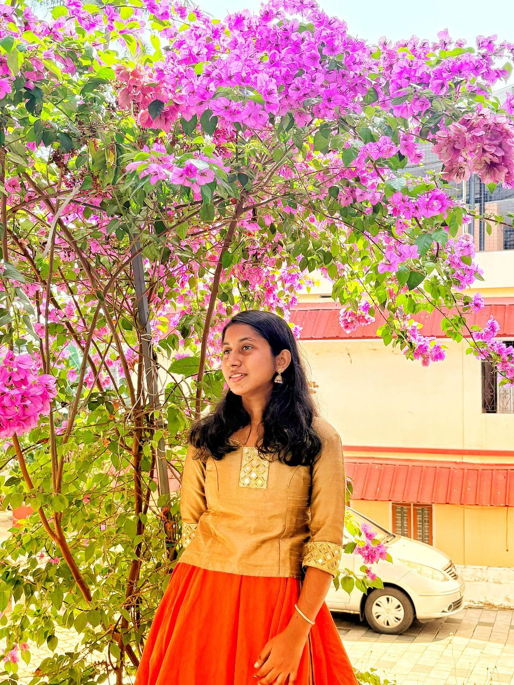

PROJECT / 01
Safarion
An AI-powered travel safety application designed to support solo explorers with emergency alerts, location tracking and safety features.
Project Details ↗AVAILABLE FOR OPPORTUNITIES
Software Engineer Intern and Quality Analyst with a Computer Science background and a passion for building reliable, user-friendly applications.

Software Engineer Intern
Kerala, India
01 / ABOUT ME
I'm a Computer Science graduate from Toc H Institute of Science & Technology, passionate about technology, software development and creating meaningful digital experiences.
Currently, I work as a Software Engineer Intern in a Quality Analyst role at Little Known Planet, where I focus on software testing, identifying issues and improving application quality.
02 / EXPERIENCE
Working on software quality assurance, functional testing, UI/UX verification, bug identification and documentation to help improve application reliability and user experience.
03 / SKILLS
Python · C# · Java · C
HTML · CSS · Flask · .NET
MySQL · SQL · SQLite
Manual Testing · Functional Testing · Bug Reporting
Figma · Canva · Git · GitHub
REST APIs · Responsive Design · Microsoft Office
04 / SELECTED PROJECTS
An AI-powered travel safety application designed to support solo explorers with emergency alerts, location tracking and safety features.
Project Details ↗A bilingual legal assistance chatbot that helps users understand legal information in English and Malayalam through text and voice interaction.
Project Details ↗An AI-powered mood detection and journaling web application that predicts emotions from users' thoughts, stores journal entries, and provides personalized mental wellness suggestions.
Project Details ↗05 / CONTACT
I'm always interested in connecting with people, exploring opportunities and learning something new.
Get In Touch ↗